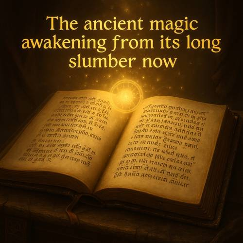
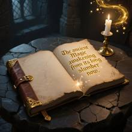

Text Generation — An ancient magic book was opened, and the golden words "The ancient ma
An ancient magic book was opened, and the golden words "The ancient magic awakening from its long slumber now" appeared on the page as the mantra was recited.

Direct — one call, no iterationContinuum — Qwen3.8-27B + Qwen-Image
Judge — Direct
PASSText Generation — The image displays the exact text "The ancient magic awakening from its long slumber now". The text is complete and correctly spelled.
FAILLogical Reasoning — The prompt specifies that the words should appear "on the page". In the image, the text is floating in the air above the open book, not written directly on the physical pages. The pages of the book contain a different, indecipherable script.
PASSAttribute - Color — The text "The ancient magic awakening from its long slumber now" is rendered in a distinct golden, glowing color, as requested by the prompt.
Judge — Continuum
PASSText Generation — The image displays text on the right page of an open book. The text reads, "The ancient magic awakening from its long slumber now," which exactly matches the text specified in the prompt.
PASSLogical Reasoning — The image shows the words glowing brightly on the page of the book, with sparks emanating from the page itself. This visual effect suggests that the words are magically appearing in that moment, consistent with the idea of them manifesting as a mantra is recited.
PASSAttribute - Color — The words written on the book's page are rendered in a glowing, luminous golden-yellow color.
What the agent did
Thinking
The user wants an image of an opened ancient magical book. Golden text "The ancient magic awakening from its long slumber now" appears on the page as a mantra is being recited. Let me generate this with qwen-image. I need to be careful about the text rendering — the prompt asks for rendered text, so I have to verify by zooming in on the text. Let me write a detailed prompt: an opened ancient magical book, a weathered leather cover, golden mystical text glowing on the page, magical runes and swirls of light, dark atmospheric setting, mystical ambience. Text on the page: "The ancient magic awakening from its long slumber now" Let me generate with a landscape-ish composition so that the opened book fits and the text is readable. Default 1024x1024. Actually, a 1024x1024 square is fine for an open book viewed from above. After that, verify the text with inspect_region, correct the spelling with edit_image, and mark the best. Alright, let's get started.
Model
I'll generate an image of an ancient magic book with golden words on the page, then verify the text carefully.
Step 1 — `generate_image`
{
"model": "qwen-image",
"prompt": "An ancient magic book opened on a dark stone table, worn cracked leather cover with ornate gold clasps, thick yellowed parchment pages. On the open page, glowing golden glowing incandescent words are written in elegant archaic script reading exactly: The ancient magic awakening from its long slumber now. The golden letters radiate warm light and fine sparks, magical golden runes and swirling light particles float around the book, deep mystical dark atmosphere, candlelight, cinematic lighting, highly detailed fantasy art",
"width": 1024,
"height": 1024
}
Result img_0
Thinking
The image is pretty close. Next, let me zoom in on the text and check whether the wording is accurate. The text as far as I can read it at a glance is: "The anci... Magic" "Magic a... awakening" "awaken... from its" "its long slumber" "now now." The wording is off — the word "Magic" is repeated, and "now" appears to be doubled. The target is "The ancient magic awakening from its long slumber now" — only one "now" at the end, "magic" only once. Let me use inspect_region to zoom in on the text area.
Model
The image looks promising, but the text may be wrong (I see "Magic" repeated and "now now"). Let me zoom in to verify the exact wording.
Now I can clearly read the text. Let me transcribe what I see: Left page: - "The anc..." (partially hidden by the light of the spine) — "The anci..." - "Magic ar..." (the second "Magic") - "awaken..." - "its long" Right page: - "Magic" (top right) - "awakening" - "from its" - "slumber" - "now now." So reading across the pages, it becomes "The anci[ent] Magic / Magic ar[...?] awakening / awaken... from its / its long slumber / now now." This is a mess. The intended sentence is: "The ancient magic awakening from its long slumber now" The rendered text has duplicated "Magic", duplicated "awaken", and duplicated "now". This is a typical text-doubling failure in Qwen image generation. I need to fix the text. Best approach: use edit_image and instruct to replace the text on the page with the correct sentence. Per the guidance: "For text in particular: specify the incorrect string and the correct string. Do not re-describe the rest of the scene." But edit_image with a long sentence is risky — the model will likely re-corrupt the text. Alternatively, I could mask the text region and inpaint, but inpaint's fill is text-driven only and can't copy specific text — however, it can render the text from the prompt. In fact, FLUX.1 Fill is not great at precise text rendering. Better approach: use edit_image with a very specific instruction. The page is parchment with gold lettering, so I can ask to rewrite the page's text to exactly: "The ancient magic awakening from its long slumber now". The tricky part: the text spans both pages across the gutter (spine). If I keep that layout, the word "magic" would fall in the middle of the gutter, making it harder to render. In the current image, "Magic" appears on both pages (duplicated). I could ask to place the sentence cleanly. Honestly, the cleanest fix might be to rewrite the entire page with the correct sentence, in a form that flows across both pages. Let me try edit_image: "Rewrite all the text on the open book's pages. The page should contain only the single sentence in elegant archaic gold script, written exactly: The ancient magic awakening from its long slumber now — no repeated words, no extra words, one 'now' at the end. Keep everything else identical." This is one big change. Let me try it. If it fails, I'll iterate with a seed or consider inpainting the text region. Actually, let me think about the risks. Edit models can often handle "change the text" instructions fairly well when the string is clear. The main risk is re-corruption. Let me try first. One consideration: the text on the page in the original image is in dark brown/black, with parts made to look gold/glowing. The prompt says "golden words" — in the image, the words appear as dark lettering with a glowing gold effect around them. That's fine. Let me also note: in the original text, there's a period after "now" — "now." The requested sentence has no period. Minor, but I should request no trailing period... Actually, "The ancient magic awakening from its long slumber now" — no period. Let me specify that. Let me run edit_image.
Model
I've confirmed the problem. The page's text is garbled and contains duplicated words: "The anci... / Magic ar... / awaken... / its long" + "Magic / awakening / from its / slumber / now now." The target sentence is "The ancient magic awakening from its long slumber now" — with no duplicated words. I'll rewrite the page's text.
Step 3 — `edit_image`
{
"image": "img_0",
"model": "qwen-image",
"prompt": "Rewrite all the writing on the open book pages. The pages must contain exactly this single sentence in elegant archaic script, with no repeated words and no extra words: \"The ancient magic awakening from its long slumber now\". The sentence should flow naturally across both open pages, ending with a single word \"now\" (no period, not doubled). Keep the parchment, the golden glow around the letters, the book, candle, runes and lighting exactly as they are; change only the wording."
}
Result img_2
Thinking
img_2 looks identical to img_0 — the edit didn't change the text. The duplicated words are still there: "Magic" appears twice, and there's "now now." The edit may not have been applied (possibly the same seed, or the model ignored it). Let me zoom in and check. Actually, looking at the thumbnail, it's exactly the same as before. Let me inspect to verify, then retry the edit with a different approach. Alternative approaches: 1. Use edit_image again with a different seed — maybe the model ignored the instruction. 2. Segment the text region and inpaint it with the correct text — but FLUX.1 Fill is weak at text rendering, and the text spans a wide area. 3. Regenerate the entire image with a cleaner composition where the text fits on one page (left or right page), making accurate text rendering more likely. Actually, a good strategy for text-heavy scenes is: place the sentence on a single page so the model can render it without a gutter (the binding section) in the middle. Regenerate with a prompt that places the sentence on the right page (or left page) and keep the other page as runes/blank. But first, let me confirm that img_2 hasn't changed, then decide. Let me inspect the text region of img_2.
Model
The edit appears to have made no visible change. Let me verify by zooming into the text of img_2.
The edit was not applied — img_2 has the exact same text as img_0: "The anci... / Magic ar... / awakening / its long" + "Magic / awakening / from its / slumber / now now." The edit_image call clearly did nothing to the text. Two options: 1. Try edit_image again with a different seed and a stronger instruction. 2. Regenerate from scratch with a composition where the text is on one page — much easier to get right. Since the edit failed completely (the text is literally pixel-for-pixel identical), regenerating might be the smarter move. But regeneration carries the risk of the same duplication problem. The duplication seems to come from the text straddling the gutter — the model renders the sentence, and then "reflects/duplicates" part of it across the spine. If I explicitly put the sentence only on the left page (or only the right page), it should be much more reliable. Strategy: regenerate with the following prompt: an open ancient magic book, on the right page there is a single sentence in a golden glowing archaic script reading exactly "The ancient magic awakening from its long slumber now", the left page is blank/with faded runes. Hmm, but which page? In a typical open book viewed head-on, the left page and the right page. If I place the text only on the left page, the gutter is at the right edge of the text — that might be fine. Actually, either way, having the text straddle the gutter is the problem. A single page should solve it. Actually, another thought: I could also keep the two-page text layout, but explicitly tell the model that the text must not be mirrored across the spine. However, the safest bet is single-page text. Let me try edit_image once more with a different seed first (low cost). Because regeneration discards the composition. But the instructions said to try 2–3 seeds before giving up on a prompt... that's about when the approach is right but the details are wrong. Here, the approach (a whole-image edit that rewrites long text) failed completely. According to the self-critique guidance: "The approach is wrong: don't iterate with edit_image. Reconsider." I think the best move is to regenerate with a single-page text layout. Let me write the prompt carefully: "An open ancient magic book on a dark cracked stone table, worn brown leather cover with gold clasps, golden glowing archaic script written on the right page reading exactly: The ancient magic awakening from its long slumber now. The letters glow warm gold with sparks. The left page is blank aged parchment with faded rune decorations at the edges. A lit candle in a brass holder to the right, magical golden light swirls and particles floating in the dark, cinematic mystical atmosphere, detailed fantasy art." Wait — if I place the text on the right page and put the candle to the right, the candle might overlap. In the original, the candle is at the top right. That's fine, the candle is above/behind. Also, I should make the text larger and centered on the page. Let me say "large, clearly legible elegant archaic script, centered on the right page, arranged in 3 lines: The ancient magic / awakening from its / long slumber now." Hmm, specifying line breaks might help with accuracy. But the model will handle it; specifying a natural line break might reduce the duplication risk. Let me try it: generate a new image.
Model
The edit wasn't reflected at all — img_2's text is identical to img_0 (same "Magic ... Magic" duplication, "now now"). The problem is that the text is straddling the gutter (the center fold). The model is mirroring words across the spine. Rather than iterating on this layout, I'll regenerate with the sentence cleanly placed on a single page.
Step 5 — `generate_image`
{
"height": 1024,
"model": "qwen-image",
"prompt": "An ancient magic book opened on a dark cracked stone table, worn cracked brown leather cover with ornate gold clasps and straps. On the right page only, a single sentence is written in large legible elegant archaic golden glowing script, exactly: The ancient magic awakening from its long slumber now. The words glow warm gold and emit fine sparks. The left page is blank aged parchment with only faint faded rune decorations at its edges. A lit white candle in a brass candlestick stands to the upper right, magical golden light swirls and floating light particles in the dark stone room, cinematic mystical atmosphere, highly detailed fantasy art.",
"width": 1024
}
Result img_4

Thinking
With this, the text is on one page. Reading at a glance: "The ancient / Magic / awakening / from its long / slumber / now." Hmm — the second line has a capital "M" in "Magic", but the requested text is "The ancient magic awakening..." with a lowercase "magic". Let me zoom in to verify the exact text. Lines: 1. "The ancient" 2. "Magic" (capital M — incorrect, should be lowercase "magic") 3. "awakening" 4. "from its long" 5. "slumber" 6. "now." The sentence matches the wording! There's just a period at the end, and the capital M on "Magic". Let me zoom in to verify each word.
Model
Much better — the text now sits on one page and appears to read correctly. Let me zoom in to verify each word exactly.
Now I can clearly read the text: Line 1: "The ancient" ✓ Line 2: "Magic" — has a capital M. In the requested string, "magic" is lowercase: "The ancient magic awakening from its long slumber now". The capitalization of "magic" is off. Line 3: "awakening" ✓ Line 4: "from its long" ✓ Line 5: "slumber" ✓ Line 6: "now." ✓ (has a trailing period; the requested string has no period — minor) Word-for-word it matches: "The ancient magic awakening from its long slumber now". Two imperfections: 1. "magic" has a capital M — this is a capitalization error with respect to the requested string. 2. Trailing period after "now". These are small but real text errors. Following the policy: "If the prompt asks for rendered text, verify the text by zooming... read the characters one by one and compare with the requested string (including capitalization)". I should attempt a fix with edit_image: "change the capital M in 'Magic' on the second line to a lowercase m, and remove the period after 'now'". This is a surgical text edit. Qwen-Image-Edit is fairly good at small text edits like this. Risk: it could break the other text. Let me try. Prompt: "On the book page, change the capital M at the start of the word 'Magic' on the second line to a lowercase m so the line reads 'magic'. Also remove the period at the end of the last word 'now' so it reads 'now' with no punctuation. Keep all other letters, the golden glow, and the rest of the image exactly as they are." Let me give this a try.
Model
The text is now almost perfect, but there are two capitalization/punctuation issues: on the second line "Magic" has a capital M (in the request it's lowercase "magic"), and there's a period at the end of "now.". Let's fix these small text details.
Step 7 — `edit_image`
{
"image": "img_4",
"model": "qwen-image",
"prompt": "Two tiny text fixes on the book page only: change the capital \"M\" at the start of the second line word \"Magic\" into a lowercase \"m\" so it reads \"magic\" (matching the lowercase style of the other words). And remove the period dot after the last word \"now\" so the line ends with just \"now\". Keep every other letter, the golden glow, and everything else in the image exactly the same."
}
Result img_6
Thinking
In the edit, the period was removed, but the first line "The ancient" is completely gone! Now the text starts from "magic". In other words, the edit accidentally deleted the first line "The ancient". Current state of img_6: "magic / awakening / from its long / slumber / now" — "The ancient" is missing. img_4 was better (it had the complete sentence, but "Magic" had a capital M, and there was a period after "now"). Let me zoom in on the page of img_6 to check if I can see "The ancient" somewhere.
Model
The edit removed the period but also seems to have deleted the first line "The ancient". Let me verify by zooming in.
Confirmed: img_6's text currently reads "magic / awakening / from its long / slumber / now" — the first line "The ancient" is missing. The edit overwrote and erased it. So comparing: - img_4: complete sentence "The ancient / Magic / awakening / from its long / slumber / now." — all words present, but "Magic" is capitalized and there's a period at the end. - img_6: "The ancient" is missing — worse. img_4 is the best. Now, can I restore "The ancient" to img_4 without losing the "magic" fix? In img_4, "Magic" had a capital M, and "now" had a period. Options: 1. Use img_4 as the base and add "The ancient" on the line above "Magic" with edit_image. Risk: the model might shift other lines or re-add the period... but I can explicitly say don't change anything else. 2. Use img_6 and add "The ancient" above "magic" with edit_image. This also works — img_6 already has lowercase "magic" and "now" without a period. I just need to add the line "The ancient" above "magic". Option 2 is good: img_6 has correct capitalization and no period, I just need to prepend "The ancient". The top of the right page is empty (there was room above the text in img_4, and the top of the page in img_6 is blank parchment). Edit prompt for img_6: "Add a new first line above the word 'magic' on the right page of the book. Write 'The ancient' in the same elegant archaic golden glowing script, matching the size and style of the other lines. The full text on the page should then read: The ancient magic awakening from its long slumber now. Keep all existing letters and everything else in the image exactly as they are." Let's try this.
Model
Confirmed — img_6 has lost the first line "The ancient". img_4 was the most complete, so my plan is: from img_6 (which has the correct lowercase "magic" and "now" without a period), add the missing line "The ancient" above "magic".
Step 9 — `edit_image`
{
"image": "img_6",
"model": "qwen-image",
"prompt": "Add one new line of text above the word \"magic\" on the right page of the book: write \"The ancient\" in the same elegant archaic golden glowing script, same size and style as the existing lines, positioned in the empty parchment space at the top of the page. After the addition, the full text on the page should read exactly: The ancient magic awakening from its long slumber now. Keep every existing letter and everything else in the image exactly as it is."
}
Result img_8
Thinking
img_8 looks great! The text now reads as follows: "The ancient / magic / awakening / from its long / slumber / now" This is exactly the sentence that was requested. Let me zoom in to confirm each word and check that there are no artifacts.
Model
This looks complete now. Let me verify the text one final time at full resolution.
With this, the text reads exactly as follows: - "The ancient" ✓ (T is capital, e is lowercase) - "magic" ✓ (lowercase m) - "awakening" ✓ - "from its long" ✓ - "slumber" ✓ - "now" ✓ (no period) Full text: "The ancient magic awakening from its long slumber now" — a perfect match with the requested string. The letters are rendered as golden, glowing archaic script on the page, the book is ancient, with candles, magical swirls, and particles of light. The scene matches the prompt: an ancient magical book is open, golden words appear on the page, and a mystical atmosphere (the chanting of a mantra is implied by the magical light effects — the prompt doesn't literally require the presence of a figure). This is a solid result. I'll mark img_8 as the best. A small check on the entire image: the rest of the scene (candle, book, table, runes) is preserved, and it looks good in the full-view thumbnail. I'll mark img_8.
Model
The text is currently correct and reads exactly as follows: "The ancient magic awakening from its long slumber now" — all words present, correct capitalization (lowercase "magic"), no extra period. The scene is complete: an ancient book open on a stone table, glowing golden archaic letters, candles, magical swirls and sparks. Marking this as the best result.
Step 11 — `mark_best`
{
"image": "img_8",
"reason": "All requested elements present: opened ancient magic book with glowing golden archaic script reading exactly \"The ancient magic awakening from its long slumber now\" (verified at crop resolution \u2014 correct words, lowercase 'magic', no trailing period), plus candle, magical golden swirls and sparks."
}
Thinking
Done. The marked image is img_8, which is also the final and best image. I'll summarize for the user.
Model
Done. The final image shows the ancient magic book opened on a cracked stone table, with the golden glowing words **"The ancient magic awakening from its long slumber now"** written in elegant archaic script on the right page, radiant with warm light and fine sparks. A candle in a brass holder and swirling golden magical light fill the dark, mystical atmosphere. Along the way I fixed two text issues the first generation produced — duplicated words straddling the page gutter, and a stray capital "M" plus trailing period — by regenerating with the sentence on a single page and then surgical text edits, verifying each fix with close-up inspection of the lettering.